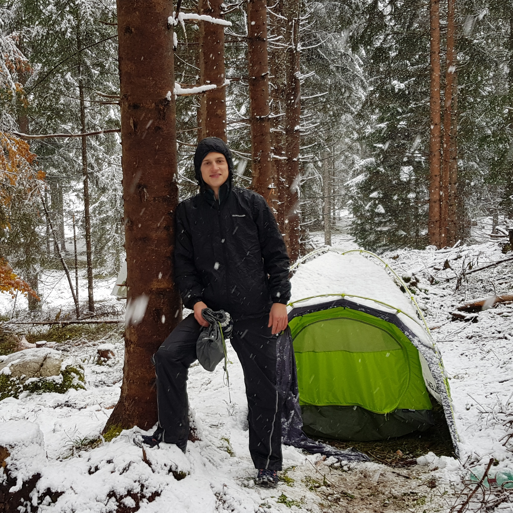
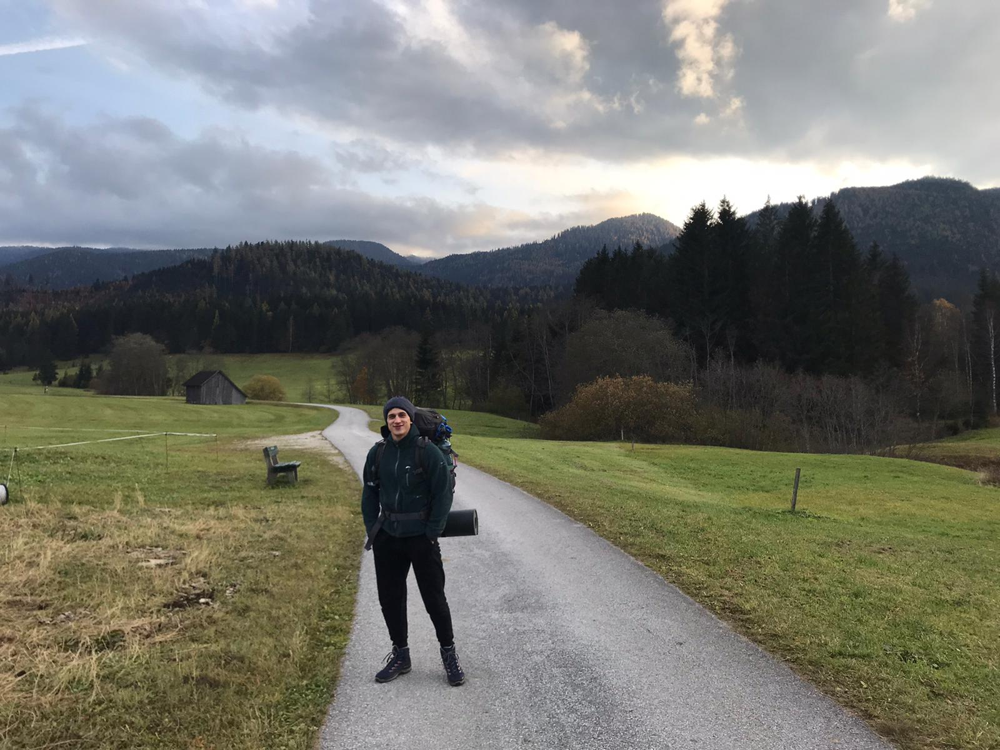

Mein Name ist Volker Sellner, ich bin 29 Jahre alt und begeistere mich für Technik, persönliche Weiterentwicklung und das Leben an sich. Ich mag Herausforderungen, setze mir gerne Ziele und schätze den Weg dorthin – vor allem dann, wenn ich dabei etwas lernen und meinen Horizont erweitern kann.
Mein beruflicher und persönlicher Weg war nicht immer geradlinig. Durch unterschiedliche Erfahrungen habe ich gelernt, Dinge aus verschiedenen Blickwinkeln zu sehen und offen an neue Aufgaben heranzugehen. Die Technik hat mich dabei nie losgelassen – sie begleitet mich seit Jahren und motiviert mich, mich ständig weiterzuentwickeln.
Besonders wichtig sind mir Verlässlichkeit, Eigeninitiative, Humor und ein respektvoller, achtsamer Umgang mit Menschen.
Meine Ausbildung vereint eine fundierte IT-orientierte Fachausbildung mit einer technischen Grundausbildung im Bereich Mechatronik. Dadurch bringe ich sowohl systematisches Denken als auch ein breites technisches Verständnis für komplexe, vernetzte Systeme mit.
Die folgenden Zertifikate ergänzen meine formale Ausbildung und spiegeln mein Interesse wider, mich auch außerhalb klassischer Ausbildungswege gezielt weiterzubilden. Sie decken sowohl technische als auch organisatorische und kreative Bereiche ab und zeigen meine Bereitschaft, mir neue Kompetenzen praxisnah anzueignen und kontinuierlich zu vertiefen.
Meine bisherige berufliche Erfahrung liegt überwiegend außerhalb der klassischen IT-Rollen. Den bewussten Schritt in die IT und Netzwerktechnik gehe ich daher als Berufseinsteiger. Mir ist bewusst, dass praktische IT-Berufserfahrung ein wichtiger Faktor ist – genau deshalb bin ich besonders motiviert, mich rasch einzuarbeiten, Verantwortung zu übernehmen und mich auch über die Arbeitszeit hinaus fachlich weiterzubilden. Die folgenden Stationen zeigen jene Tätigkeiten, in denen ich fachlich wie persönlich am meisten gelernt habe und deren Kompetenzen ich gezielt in eine IT-nahe Position einbringe.
In den folgenden Technologien und Werkzeugen habe ich mir durch zahlreiche praktische Übungen, Ausbildungsprojekte und eigenständige Projekte fundierte Kenntnisse angeeignet.
Musik ist für mich ein wichtiger Ausgleich zum technischen Alltag. Ich spiele leidenschaftlich gerne Trompete und trete dabei auch gelegentlich bei Auftritten auf. Das Musizieren fördert Konzentration, Disziplin und Teamarbeit – Fähigkeiten, die sich auch im beruflichen Umfeld positiv auswirken.
In meiner Freizeit unternehme ich gerne längere Trekkingtouren, wie etwa den Olafsweg oder den Jakobsweg. Das mehrtägige Wandern hilft mir, den Kopf frei zu bekommen, Durchhaltevermögen zu stärken und Ziele Schritt für Schritt zu erreichen – sowohl mental als auch körperlich.


Schreib mir gerne eine Nachricht – ich melde mich so rasch wie möglich zurück.